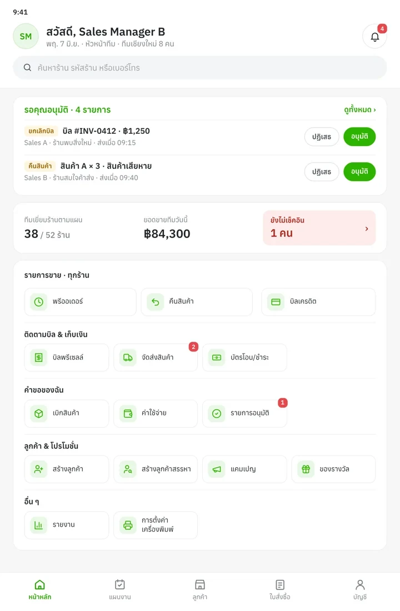

01 · Home · Sales และ Sales Manager
Home ไว้ดูงานทั้งวัน งานของร้านทำที่หน้าร้าน
งานวันนี้อยู่บนสุด ยอดรอชำระแยกสีจากยอดขาย จัด 19 เมนูใหม่เป็น 3 เมนูหลักบนแถบล่าง กับอีก 5 กลุ่มตามช่วงงาน ส่วน Sales Manager ใช้โครงเดียวกัน แล้วเพิ่มงานอนุมัติไว้บนสุด
ตัดสินใจ เอาเมนูเปิดบิลออกจาก Home เพราะถ้าเปิดบิลจาก Home ได้ Sales จะไม่แน่ใจว่าบิลผูกกับร้านไหน
แก้ปัญหาSales Manager ไม่ต้องเรียนหน้าจอใหม่ และคำขอของ Sales ไม่ค้าง